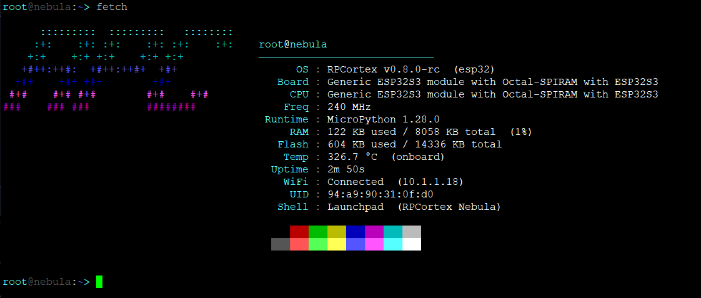
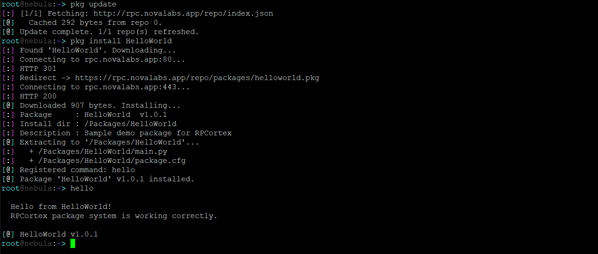

RPCortex is a CLI operating system for the Raspberry Pi Pico 2 W, ESP32-S3, and compatible boards, written entirely in MicroPython. User accounts, WiFi, a package manager, a built-in editor, and a full boot sequence.
Colored prompt, full cursor navigation, command history, home directory shorthand, and session logging. Commands load once and stay cached.
ls, cd, mv, cp, rm, tree, df, head, tail. Everything you'd expect from a real shell, including colored output and file metadata.
Salted SHA256 passwords, multi-user support, per-user home directories. Accounts are created and managed entirely from the shell.
Scan, connect, and save networks. Autoconnect on boot. Includes wget, curl, runurl, ping, and nslookup. HTTP and HTTPS supported.
Install packages by name from a repo, manage repos, search and browse the index, upgrade installed packages. No reboot needed after install or remove.
A full terminal text editor accessible via edit, nano, or vi. Supports find, go-to-line, cut/paste, and save. Works over any serial connection.
Every boot runs a self-test: registry check, CPU arithmetic, RAM verification, clock calibration, and optional WiFi autoconnect. Recovery shell if anything fails.
An ANSI box-drawing settings panel accessible via settings. Toggle boot overclock, WiFi autoconnect, verbose boot, the beeper, and more. No registry editing needed.
Overclock and underclock via pulse. Benchmark with bench (NebulaMark). System info via fetch. Heap management with freeup.
| Board | Status |
|---|---|
| Raspberry Pi Pico 2 W (RP2350 + WiFi) | Recommended |
| ESP32-S3 | Recommended |
| Raspberry Pi Pico (RP2040) | Supported |
| Raspberry Pi Pico W (RP2040 + WiFi) | Supported |
| Raspberry Pi Pico 2 (RP2350) | Supported |
| ESP32 / ESP32-S2 | Supported |
MicroPython v1.25+ • 4 MB flash recommended • 256 KB+ RAM • Serial terminal at 115200 baud
Running on an ESP32-S3 over serial.


A sampling of what the shell gives you out of the box. Full reference in the docs.
ls # list with size + timestamp cd ~/projects # ~ is your home dir cp file.py bak/ tree # recursive directory tree df # flash usage edit notes.txt # open the built-in editor
wifi connect # interactive connect wget http://... # stream to flash curl http://... # print response runurl http://a.py # fetch and run ping 8.8.8.8 nslookup example.com
fetch # system info display sysinfo # OS + hardware overview pulse oc 220 # overclock to 220 MHz bench # run NebulaMark freeup # compact heap, report RAM settings # open settings panel
whoami mkacct # create account chpswd root # change password rmuser guest logout # back to login
Prefer a one-click option? The Web Installer connects to your device over USB and flashes RPCortex directly from your browser — no software required (Chrome/Edge only).
Download the latest MicroPython firmware for your board from micropython.org and flash it using Thonny or picotool. v1.25+ required, v1.28 recommended.
Download the latest .zip release from GitHub and copy all files to the root of the board's filesystem using Thonny or mpremote.
Connect with PuTTY (Windows) or minicom / screen (Linux/macOS) at 115200 baud. Thonny's REPL works in a pinch but arrow keys and the editor won't function correctly.
POST runs automatically. You'll be prompted to set a root password and given a guest account. Log in and you're in the shell.
wifi connect pkg repo add http://rpc.novalabs.app/repo/index.json pkg update pkg available pkg install HelloWorld hello
The official RPCortex package repo is hosted here. Add it once and use pkg update to stay current. Installed commands are live immediately after install. No reboot needed.
pkg repo add http://rpc.novalabs.app/repo/index.json pkg update pkg available # list everything in the repo pkg search <query> # filter by name or description pkg install <name> pkg info <name> # show package details pkg list # what's installed pkg upgrade # update outdated packages pkg remove <name>
Packages are standard ZIP archives renamed to .pkg. Build your own with the included make_pkg.py script and submit a PR to get listed in the repo.
Full package development guide →
Complete command tables, shell controls, registry keys, POST details, security model, and known limitations.
NebulaDocs.html →Everything in v0.8.1-beta2 — shell, networking, package manager, web installer, settings panel, and more.
Release Notes →Step-by-step guide: write a command, create a package.cfg, build a .pkg with make_pkg.py, host a repo, and get listed.